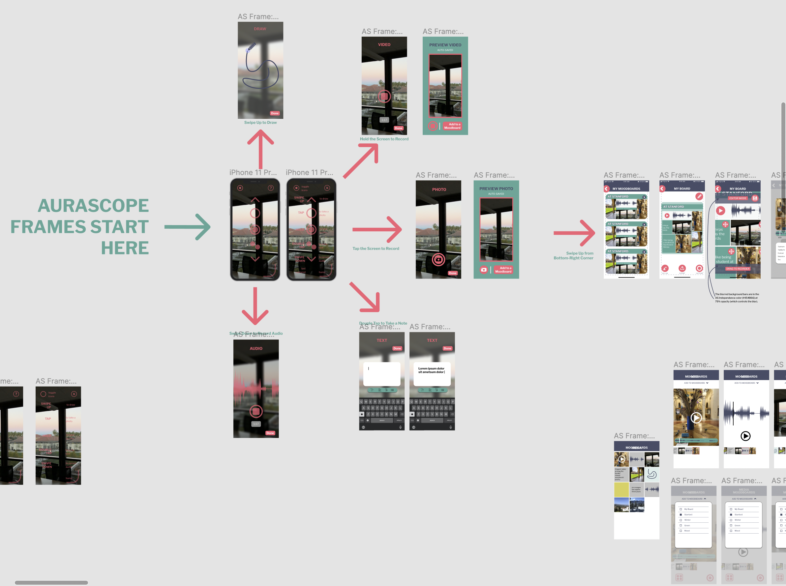
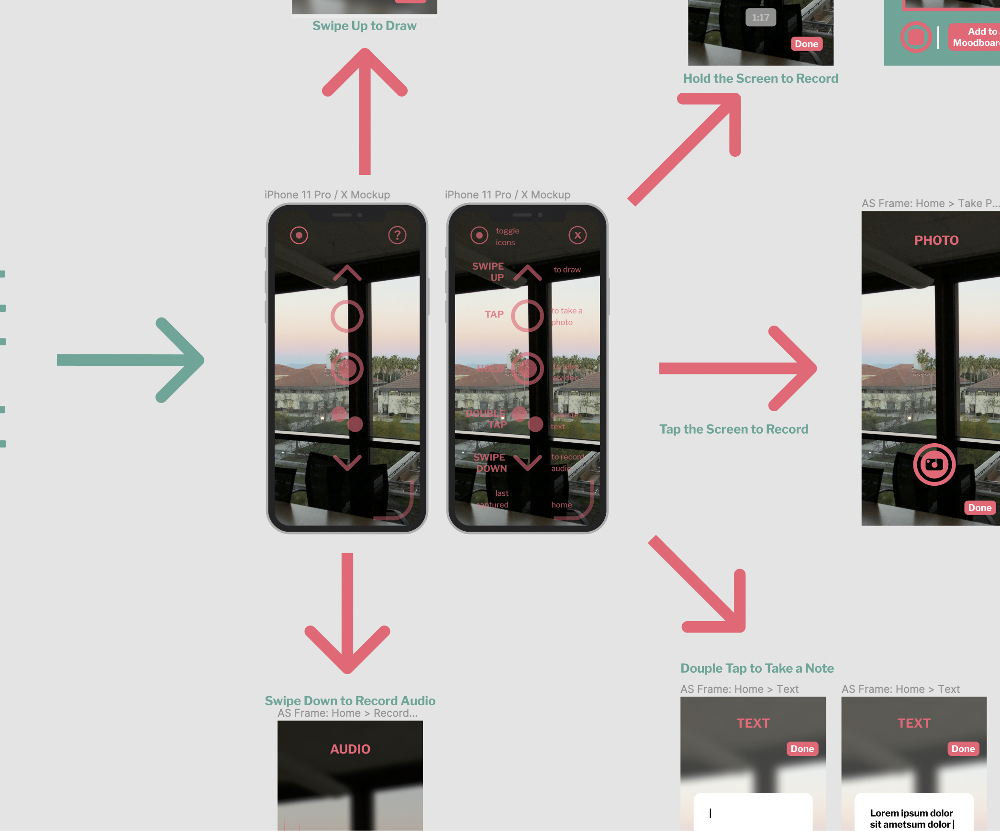
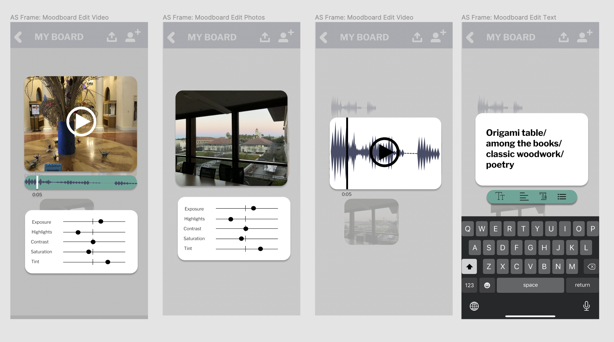

STAGE 1: The Inception
Three musicians decide to develop a creativity-focused app.
Aurascope is a mobile app designed to help creative people capture, catalog and develop their everyday inspiration. With Aurascope, users can quickly capture photos, videos, audio recordings, drawings and text which they can then auto-generate into mood boards based on time or location. They can share and collaborate on mood boards with other users, instantly sharing ideas with their artistic network.
TEMPORARY IMAGE: 
Read about our app, our team and our development process!
Aurascope is a mobile app that allows users to capture multimedia and autogenerate customizable moodboards. Aurascope was developed for Stanford Computer Science Course CS 147: Introduction to Human Computer Interaction. Our app was inspired by the over one dozen partcipants of our "needfinding" interviews earlier in the quarter.
With Aurascope, users can take photos, videos and audio recordings and draw and write text.
Photos of Aurascope HiFi media capture will go here. TEMPORARY IMAGE:
Captured media is saved to the media library, where users can autogenerate new moodboards based on their saved media or add their saved media to existing moodboards.
Media library HiFi photos will go here. TEMPORARY IMAGE:
Users can edit their own moodboards and also share moodboards to edit with collaborators.
More HiFi editing images will go here. TEMPOARARY IMAGE:

Three musicians decide to develop a creativity-focused app.

The team interviews sound designers and musicians to find potential areas of need.

The team drafts solutions and builds and tests experience prototypes in order to test our underlying assumptions.

The team creates a concept video to illustrate our vision of how the final app will function.

The team creates and tests a Low Fidelity Prototype using Balsamiq.

The team creates a medium fidelity prototype using Figma.

The team receives feedback from the class via Heuristic Evalution.

The team creates a high fidelity prototype using ReactNative.

The team compiles a final poster and pitch to present at the CS 147 2022 Expo.
Katie P. is an undergraduate student at Stanford University studying Symbolic Systems with a concentration in Computer Music. As a composer and vocalist, she has extensive academic and professional experience in classical, musical theater and pop music.
Nathan S. is an undergrat at Stanford studying Synbolic Systems in Human-Computer Interaction. He also freelances as an audio engineer and is an avid bassist and violinist.
Pramod K. is a Masters student of Computer Science at Stanford University in California. He studies topics in human-computer interaction (HCI), mechanical engineering, & industrial design. Pramod's research interests include AR, affective computing, physical interfaces, AI, perception, wearable computers, and robotics.